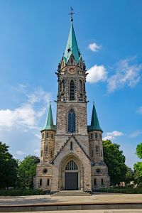

Vihkiminen tapahtuu Johanneksen kirkossa lauantaina 13.7.2024 14:00. Vihkimisestä siirrymme suoraan kävelyetäisyydellä sijaitsevaan Hotel Katajanokkaan viettämään iltaa ruoan, juoman, tanssin ja musiikin parissa. Ruokailu alkaa 16:30 ja illan aikana juhlapaikalla tarjoillaan pientä purtavaa. Juhlatila on varattuna meille seuraavaan päivään saakka, joten juhlia voidaan yömyöhään saakka. Helsingin keskustasta löytyy monia vaihtoehtoja koskien majoitusta, mutta hotellit yms kannattaa varata mahdollisimman ajoissa.
